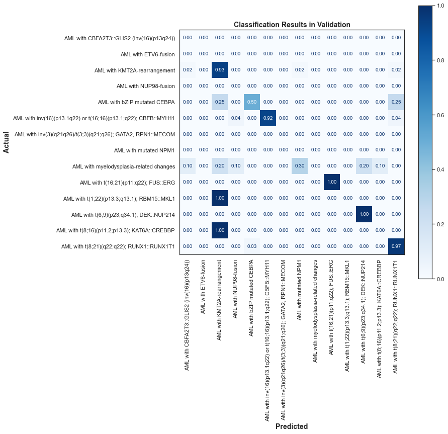
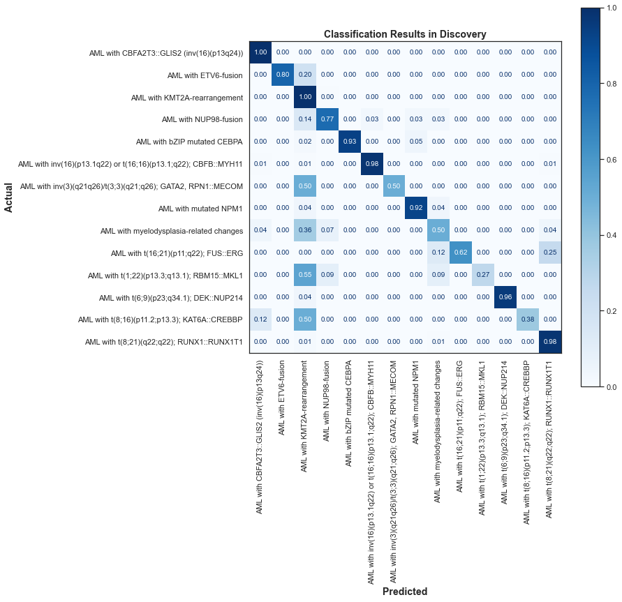
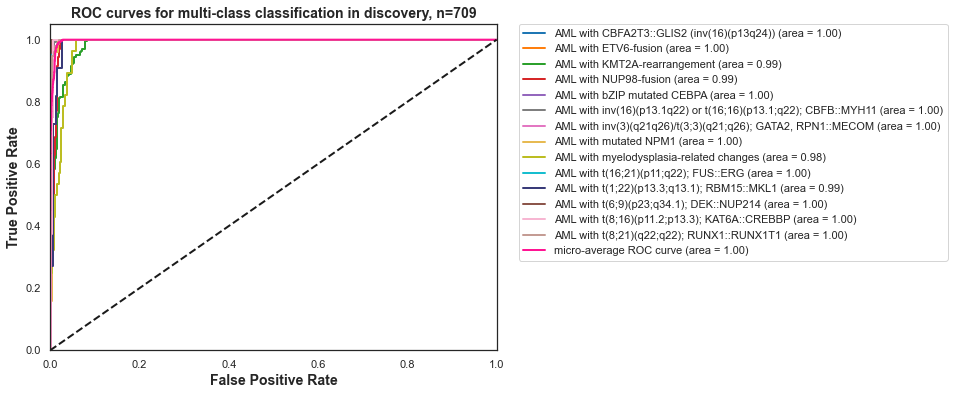
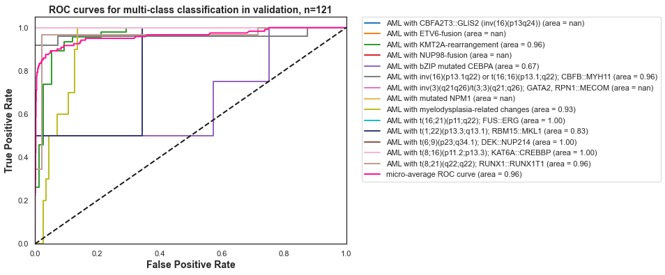
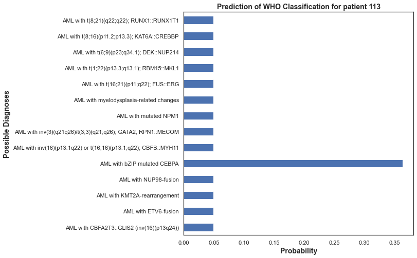
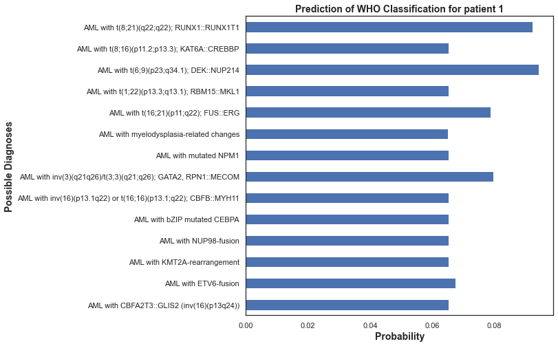

Mutli-Class Classifier#
Load Datasets#
Show code cell source
import pandas as pd
PaCMAP_path = '../Data/Processed_Data/PaCMAP_Results/'
input_path = '../Data/Processed_Data/'
output_path = '../Data/Processed_Data/'
x_train = pd.read_pickle(PaCMAP_path+'embedding.pkl')
x_test = pd.read_pickle(PaCMAP_path+'embedding_test.pkl')
y = pd.read_csv(input_path+'y.csv', index_col=0)
labels = pd.read_excel(input_path+'y_plus_WHOclass.xlsx', index_col=0)['WHO Classification']
y = y.join(labels.to_frame('WHO Classification'))
y_train = y[~y['Clinical Trial'].isin(['AML02','AML08'])]
y_test = y[y['Clinical Trial'].isin(['AML02','AML08'])]
y_train = y_train[y_train['WHO Classification'].notnull()]
y_test = y_test[y_test['WHO Classification'].notnull()]
x_train = x_train.loc[y_train.index].to_numpy()
x_test = x_test.loc[y_test.index].to_numpy()
Define Classes#
Show code cell source
y_train['WHO Classification'].value_counts()
AML with KMT2A-rearrangement 228
AML with t(8;21)(q22;q22); RUNX1::RUNX1T1 152
AML with inv(16)(p13.1q22) or t(16;16)(p13.1;q22); CBFB::MYH11 129
AML with bZIP mutated CEBPA 44
AML with NUP98-fusion 35
AML with myelodysplasia-related changes 28
AML with mutated NPM1 25
AML with t(6;9)(p23;q34.1); DEK::NUP214 24
AML with t(1;22)(p13.3;q13.1); RBM15::MKL1 11
AML with CBFA2T3::GLIS2 (inv(16)(p13q24)) 8
AML with t(16;21)(p11;q22); FUS::ERG 8
AML with t(8;16)(p11.2;p13.3); KAT6A::CREBBP 8
AML with ETV6-fusion 5
AML with inv(3)(q21q26)/t(3;3)(q21;q26); GATA2, RPN1::MECOM 4
Name: WHO Classification, dtype: int64
Train and Test Classifier#
Show code cell source
from sklearn.model_selection import GridSearchCV
from sklearn.gaussian_process import GaussianProcessClassifier
from sklearn.metrics import confusion_matrix, ConfusionMatrixDisplay
parameters = {}
estimator = GaussianProcessClassifier(random_state=42 )
grid_search = GridSearchCV(
estimator=estimator,
param_grid=parameters,
scoring = 'roc_auc',
n_jobs = -1,
cv = 3,
verbose=True,
)
grid_search.fit(x_train,y_train['WHO Classification'])
model = grid_search.best_estimator_.fit(x_train,y_train['WHO Classification'])
clf = grid_search.best_estimator_
clf.fit(x_train, y_train['WHO Classification'])
y_pred = clf.predict(x_test)
# print score of y_pred
print(f'ROC AUC of GPC classifier on test set: {clf.score(x_test, y_test["WHO Classification"]):.2f}')
print(f'ROC AUC of GPC classifier on train set: {clf.score(x_train, y_train["WHO Classification"]):.2f}')
Fitting 3 folds for each of 1 candidates, totalling 3 fits
C:\Users\flourenco\AppData\Local\Programs\Python\Python310\lib\site-packages\sklearn\model_selection\_search.py:952: UserWarning: One or more of the test scores are non-finite: [nan]
warnings.warn(
ROC AUC of GPC classifier on test set: 0.82
ROC AUC of GPC classifier on train set: 0.92
Evaluate Results by Class#
Show code cell source
import matplotlib.pyplot as plt
import seaborn as sns
sns.set_theme(style='white')
predictions = clf.predict(x_test)
cm = confusion_matrix(y_test['WHO Classification'], predictions, labels=clf.classes_, normalize='true')
disp = ConfusionMatrixDisplay(confusion_matrix=cm,
display_labels=clf.classes_,
)
disp.plot( cmap='Blues', values_format='.2f', xticks_rotation='vertical')
# Increase the size of the plot
fig = plt.gcf()
fig.set_size_inches(10, 10)
# Add title and axis names
plt.title('Classification Results in Validation', fontsize=14, fontweight='bold')
plt.xlabel('Predicted', fontsize=14, fontweight='bold')
plt.ylabel('Actual', fontsize=14, fontweight='bold')
plt.show()

Show code cell source
predictions = clf.predict(x_train)
cm = confusion_matrix(y_train['WHO Classification'], predictions, labels=clf.classes_, normalize='true')
disp = ConfusionMatrixDisplay(confusion_matrix=cm,
display_labels=clf.classes_,
)
disp.plot( cmap='Blues', values_format='.2f', xticks_rotation='vertical')
# Increase the size of the plot
fig = plt.gcf()
fig.set_size_inches(10, 10)
# Add title and axis names
plt.title('Classification Results in Discovery', fontsize=14, fontweight='bold')
plt.xlabel('Predicted', fontsize=14, fontweight='bold')
plt.ylabel('Actual', fontsize=14, fontweight='bold')
plt.show()

Evaluate ROC AUC Curves#
Show code cell source
def plot_roc_curve(clf, x, y, dataset):
y_score = clf.predict_proba(x)
from sklearn.preprocessing import label_binarize
# ignore warnings
import warnings
warnings.filterwarnings("ignore")
# Binarize the labels to plot ROC curves for each class
y_bin = label_binarize(y, classes=clf.classes_)
n_classes = y_bin.shape[1]
import numpy as np
import matplotlib.pyplot as plt
from sklearn.metrics import roc_curve, auc
from sklearn.preprocessing import label_binarize
from itertools import cycle
# Compute ROC curve and ROC area for each class
fpr = dict()
tpr = dict()
roc_auc = dict()
for i in range(n_classes):
fpr[i], tpr[i], _ = roc_curve(y_bin[:, i], y_score[:, i])
roc_auc[i] = auc(fpr[i], tpr[i])
# Compute micro-average ROC curve and ROC area
fpr["micro"], tpr["micro"], _ = roc_curve(y_bin.ravel(), y_score.ravel())
roc_auc["micro"] = auc(fpr["micro"], tpr["micro"])
# Plot ROC curves for each class and micro-average ROC curve
plt.figure(figsize=(8, 6))
colors = custom_color_palette = [
'#1f77b4',
'#ff7f0e',
'#2ca02c',
'#d62728',
'#9467bd',
'#7f7f7f',
'#e377c2',
'#e7ba52',
'#bcbd22',
'#17becf',
'#393b79',
'#8c564b',
'#f7b6d2',
'#c49c94']
for i, color in zip(range(n_classes), colors):
plt.plot(fpr[i], tpr[i], color=color, lw=2,
label='{0} (area = {1:0.2f})'
''.format(clf.classes_[i], roc_auc[i]))
plt.plot(fpr["micro"], tpr["micro"], color='deeppink', lw=2,
label='micro-average ROC curve (area = {0:0.2f})'
''.format(roc_auc["micro"]))
plt.plot([0, 1], [0, 1], 'k--', lw=2)
plt.xlim([0.0, 1.0])
plt.ylim([0.0, 1.05])
plt.xlabel('False Positive Rate', fontsize=14, fontweight='bold')
plt.ylabel('True Positive Rate', fontsize=14, fontweight='bold')
plt.title('ROC curves for multi-class classification in ' + dataset + ', n=' + str(len(x)), fontsize=14, fontweight='bold')
# plot legend outside of plot
plt.legend(bbox_to_anchor=(1.05, 1), loc='upper left', borderaxespad=0.)
plt.show()
plot_roc_curve(clf, x_train, y_train['WHO Classification'], 'discovery')
plot_roc_curve(clf, x_test, y_test['WHO Classification'], 'validation')


Evaluate Predictions by Patients#
y_score = clf.predict_proba(x_train)
y_score = pd.DataFrame(y_score, columns=clf.classes_)
round(y_score.head(),2)
| AML with CBFA2T3::GLIS2 (inv(16)(p13q24)) | AML with ETV6-fusion | AML with KMT2A-rearrangement | AML with NUP98-fusion | AML with bZIP mutated CEBPA | AML with inv(16)(p13.1q22) or t(16;16)(p13.1;q22); CBFB::MYH11 | AML with inv(3)(q21q26)/t(3;3)(q21;q26); GATA2, RPN1::MECOM | AML with mutated NPM1 | AML with myelodysplasia-related changes | AML with t(16;21)(p11;q22); FUS::ERG | AML with t(1;22)(p13.3;q13.1); RBM15::MKL1 | AML with t(6;9)(p23;q34.1); DEK::NUP214 | AML with t(8;16)(p11.2;p13.3); KAT6A::CREBBP | AML with t(8;21)(q22;q22); RUNX1::RUNX1T1 | |
|---|---|---|---|---|---|---|---|---|---|---|---|---|---|---|
| 0 | 0.05 | 0.05 | 0.33 | 0.05 | 0.05 | 0.05 | 0.05 | 0.05 | 0.05 | 0.05 | 0.05 | 0.05 | 0.05 | 0.05 |
| 1 | 0.07 | 0.07 | 0.07 | 0.07 | 0.07 | 0.07 | 0.08 | 0.07 | 0.07 | 0.08 | 0.07 | 0.09 | 0.07 | 0.09 |
| 2 | 0.05 | 0.05 | 0.05 | 0.05 | 0.33 | 0.05 | 0.05 | 0.05 | 0.05 | 0.05 | 0.05 | 0.05 | 0.05 | 0.05 |
| 3 | 0.07 | 0.07 | 0.10 | 0.08 | 0.07 | 0.07 | 0.07 | 0.07 | 0.07 | 0.07 | 0.07 | 0.07 | 0.07 | 0.07 |
| 4 | 0.07 | 0.07 | 0.07 | 0.07 | 0.07 | 0.07 | 0.08 | 0.07 | 0.07 | 0.07 | 0.07 | 0.09 | 0.07 | 0.09 |
Show code cell source
i = 113
y_score.loc[i].plot(kind='barh')
plt.title('Prediction of WHO Classification for patient ' + str(i), fontsize=14, fontweight='bold')
plt.xlabel('Probability', fontsize=14, fontweight='bold')
plt.ylabel('Possible Diagnoses', fontsize=14, fontweight='bold')
# change figure size
fig = plt.gcf()
fig.set_size_inches(8, 8)
plt.show()

Show code cell source
i = 1
y_score.loc[i].plot(kind='barh')
plt.title('Prediction of WHO Classification for patient ' + str(i), fontsize=14, fontweight='bold')
plt.xlabel('Probability', fontsize=14, fontweight='bold')
plt.ylabel('Possible Diagnoses', fontsize=14, fontweight='bold')
# change figure size
fig = plt.gcf()
fig.set_size_inches(8, 8)
plt.show()
